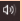
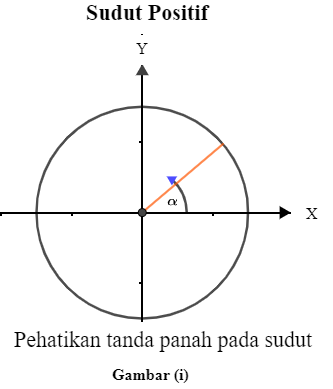
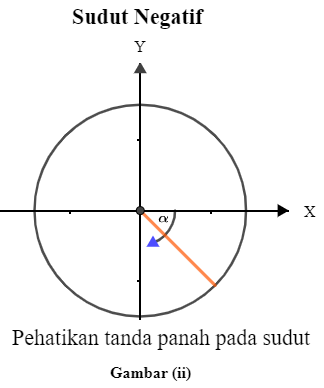
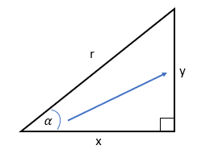
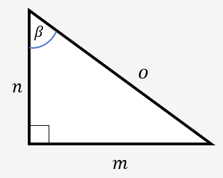

Sebelum kita mempelajari Trigonometri, kita coba mencari tau dulu bagaimana sejarah trigonometri. Coba perhatikan penjelasan video di bawah ini.
1. Klik tombol untuk memulai video.
2. Klik tombol untuk memperbesar video.
3. Klik tombol untuk mengatur volume.
Setelah kalian memutar video di atas, silahkan isi kotak jawaban dibawah ini.
1. Trigonometri adalah ilmu Matematika yang mempelajari mengenai
2. Penemu konsep Trigonometri pertama kali adalah
Kalian sudah mengetahui sejarah dari Trigonometri dengan menonton video di atas. Mari sekarang kita mempelajari tentang Sudut Positif dan Negatif serta Sisi dan Sudut Segitiga.
A. Sudut Positif dan Sudut Negatif
Trigonometri berkaitan erat dengan ukuran sudut. Ukuran sudut bisa positif ataupun negative, tergantung pada arah pengukuran searah atau berlawanan dengan arah jarum jam. Perhatikan Gambar (i) dan Gambar (ii).

Gambar (i) menunjukkan sudut α positif, yang diukur mulai dari sumbu X positif berlawanan arah jarum jam

Gambar (ii) menunjukkan sudut α negatif, yang diukur mulai dari sumbu X positif searah jarum jam
B. Sisi dan Sudut Segitiga
Trigonometri juga berkaitan erat dengan sisi dan sudut pada segitiga siku-siku. Perhatikan gambar (iii) berikut.

Gambar (iii)
Gambar (iii) memperlihatkan sebuah segitiga siku-siku yang ukuran salah satu sudutnya α.
Pada segitiga tersebut sisi y berada di depan sudut α, maka disebut sisi depan. Sisi r merupakan sisi terpanjang, berada di depan sudut siku-siku dan disebut sisi miring/Hipotenusa.
Sedangkan sisi x disebut sisi samping. Karena sisi x berada di samping sudut α. Maka dapat kita simpulkan bahwa:
y = Sisi Depan x = Sisi Samping r = Sisi Miring/sisi terpanjang/Hipotenusa
Jika kalian sudah memahami. mari kita mencoba!

Gambar (iv)
Perhatikan segitiga pada Gambar (iv). Kemudian isilah kotak jawaban di bawah ini dengan jawaban yang sesuai.
jawaban benar akan menampilkan warna hijau dan jawaban salah menampilkan warna merah